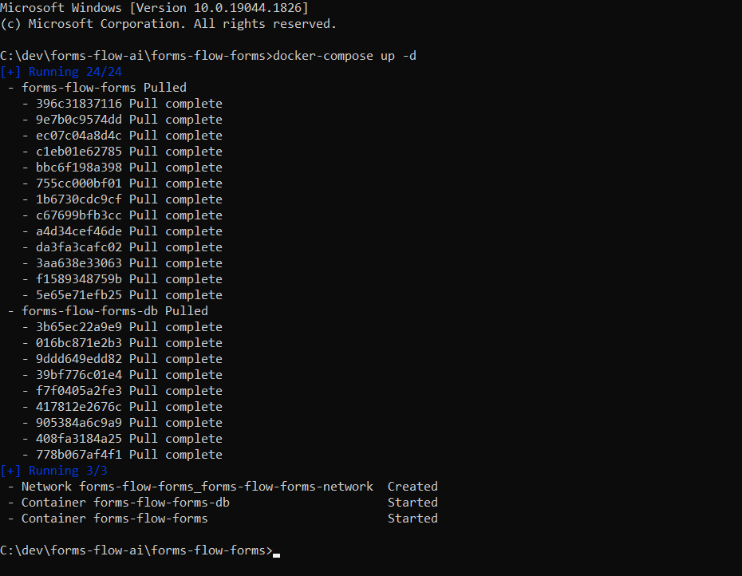
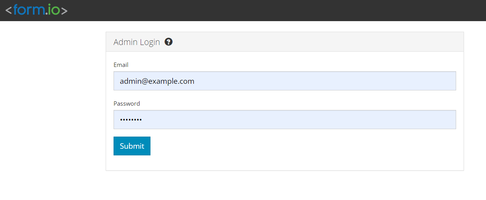

<article class="docs-article" id="section-1">
    <section class="docs-section" id="item-1-1">
        <div>
            <h1 id="form-management-platform">Form Management Platform</h1>
            <hr>

            <p><strong>Formsflow.ai</strong> leverages form.io to build &quot;serverless&quot; data
                management applications using a simple drag-and-drop form builder interface.</p>
            <p>To know more about form.io, go to <a href="https://form.io">https://form.io</a>.</p>

            <h2 id="prerequisites">Prerequisites</h2>
            <ul>
                <li>For docker based installation <a href="https://docker.com">Docker</a> need to be
                    installed.</li>
            </ul>

            <h3 id="installation">Installation</h3>
            <ul>
                <li>Make sure you have a Docker machine up and running.</li>
                <li>Make sure your current working directory is
                    &quot;forms-flow-ai/forms-flow-forms&quot;.</li>
                <li>Rename the file <strong>sample.env</strong> to <strong>.env</strong>.
                </li>
                <li>Modify the environment variables in the newly created <strong>.env</strong> file
                    if needed. Environment variables are given below.</li>
                <div class="callout-block callout-block-info">
                    <div class="content">
                        <span class="callout-icon-holder me-1"></span>

                        <i class="fa fa-bullhorn"></i>

                        <em> NOTE :<code>{your-ip-address}</code> given inside the .env file should
                            be changed to your host system IP address. Please take special care to
                            identify the correct IP address if your system has multiple network
                            cards.</em>

                    </div>

                </div>


            </ul>
            <br>

            <br>
            </img><br><br>

            <div class="callout-block callout-block-info">
                <div class="content">
                    <span class="callout-icon-holder me-1"></span>

                    <i class="fa fa-info-circle"></i>

                    <code>FORMIO_DEFAULT_PROJECT_URL</code> *

                </div>
                <br>
            </div>
            <b>Additionally, you may want to change these</b><br>
            <ul>
                <li>The value of Mongo database details (especially if this instance is not just for
                    testing purposes)</li>
                <li>The value of ROOT user account details (especially if this instance is not just for
                    testing purposes)</li>
            </ul>
            <h3 id="running-the-application">Running the application</h3>
            <ul>
                <li>forms-flow-forms service uses port 3001, make sure the port is available.</li>
                <li>
                    <p><code>cd {Your Directory}/forms-flow-ai/forms-flow-forms</code></p>
                </li>
                <li>
                    <p>Run <code>docker-compose up -d</code> to start</p>
            </ul>
            <br><br>
            </img>
            <div class="callout-block callout-block-info">
                <div class="content">
                    <span class="callout-icon-holder me-1"></span>

                    <i class="fa fa-bullhorn"></i>

                    <em>NOTE: Use --build command with the start command to reflect any future
                        <strong>.env</strong> changes eg :
                        <code>docker-compose up --build -d</code></em>

                </div>

            </div>

            <h4 id="to-stop-the-application">To stop the application</h4>
            <ul>

                <li>Run <code>docker-compose stop</code> to
                    stop.</li>
            </ul>


            <h3 id="health-check">Health Check</h3>
            <p> The application should be up and available for use at port defaulted to 3001 in
                (i.e. <a href="http://localhost:3001/">http://localhost:3001/</a>)</p>
            <br>
            </img><br><br>
            <pre><code>    Default Login Credentials
            <span class="hljs-comment">-----------------</span>
            User Name / Email : <span class="hljs-type">admin</span>@example.com
            Password  : <span class="hljs-type">changeme</span>
            </code></pre><br>


        </div>
        </section>
        </article>
